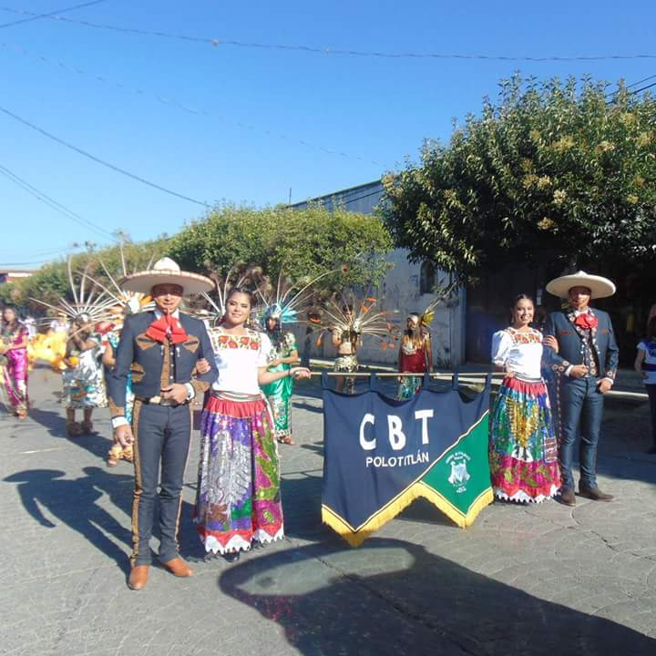

¿Quienes somos?
Somos una institución cuya trayectoria ha sido de 16 años,a lo largo de este periodo se han podido formar personas con buenos principios,permitiendo asi un mejor desarrollo en sus vidas laborales,ya que dentro de la estancia en este plantel el alumno no solo se enfoca en lo academico;si no también la parte social ya que en ciertos semestres se desarrollan protocolos para el desarrollo de una microempresa.Estamos denominados como "La familia CBT",debido a que no soló pasamos 8 horas en plena convivencia,si no que también en ciertos tiempos fomentamos una parte muy especial para nuestro crecimiento denominado "Compañerismo".Ciertas actividades que realizamos nos ayudan a poder comunicarnos mas con las personas que estan a nuestro alrededor,Dando asi como resultado una buena exelencia academica

Dentro de nuestro horario de clases estamos clasificados como Turno descontinuo,somos una institución publica,actualmente se cuenta con un numero de 381 alumnos,también cabe hacer mención que para el buen desempeños se cuenta con un total de 25 personas dando así un total de 11 Grupos,Dividido en nuetras carreras ya mencionadas,
Nuestra mision como institucion es;Brindar un servico de calidad que permita formar bachilleres técnicos bien preparados y competentes,con sentido ético y humano,que se incorporen con éxito en la instituciones del nivel superior o al campo labora.Tambien es importante decir que como VISION se tiene,Ser una institución Competitiva con Sensibilidad y Compromiso Social,que ofezca una educación de Calidad y tecnologìa de vanguardìa que permita la formación integral de los alumnos.